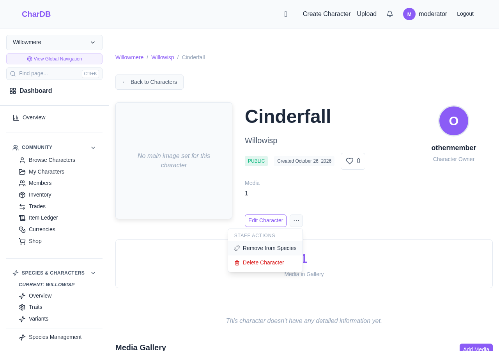
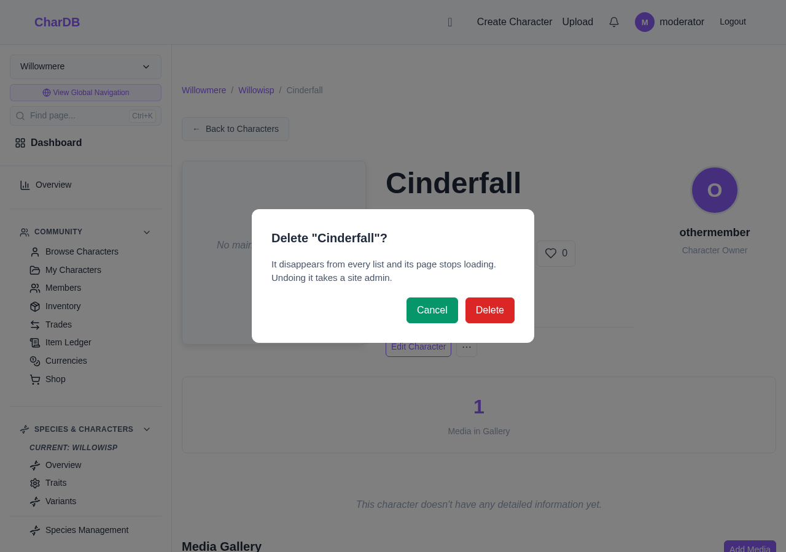
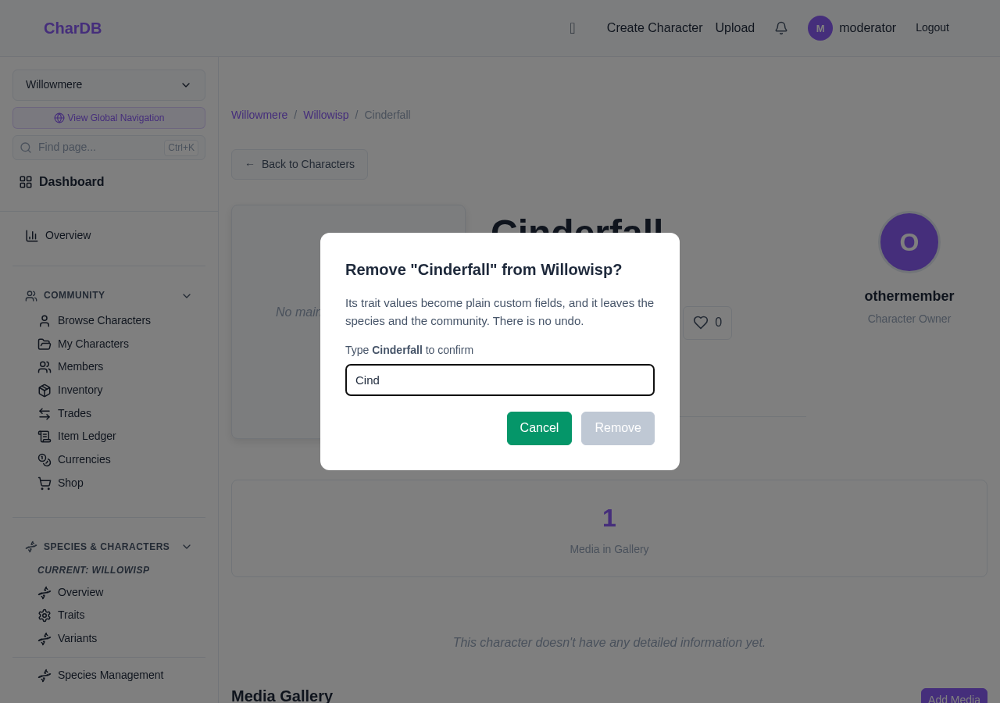
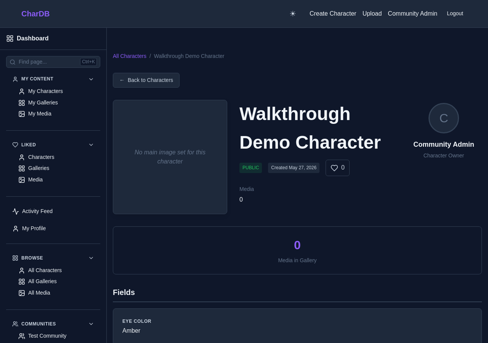
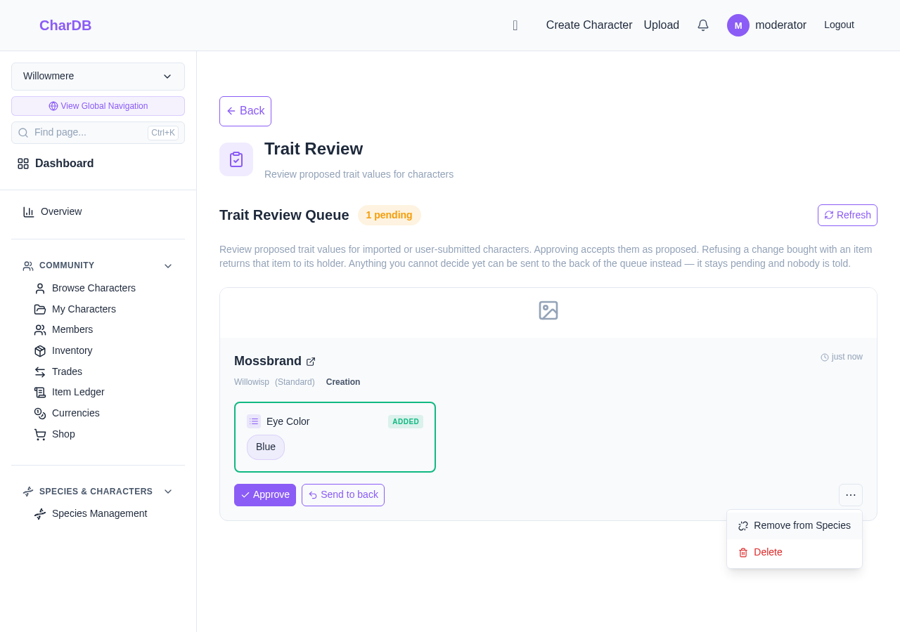

A walkthrough of the community admin tools for managing characters
Community admins and moderators now have two new character management tools: Delete Character and Remove from Species. Both sit in the ⋯ menu on the character page and on every card in the Trait Review Queue, one deliberate step away from the everyday buttons, and both ask you to confirm.
Deletes the character and removes it from all public views.
Detaches the character from its species, preserving trait data as custom fields.
Requires the canDeleteCharacter role permission or
global admin.
Both actions are in the menu on each Trait Review card.
Edit Character is a button in the character info section, for the owner and for staff alike. Beside it, staff with the canDeleteCharacter or canEditCharacterRegistry permission (or global site admins) get a ⋯ button. It opens a Staff actions menu:
An owner without either permission sees Edit Character and no menu.

Choosing Delete Character from the menu shows a confirmation dialog describing what will happen. Focus starts on Cancel, so a stray Enter does nothing:

Choosing Remove from Species from the menu shows a confirmation dialog. There is no undo, so Remove stays disabled until you type the character's name exactly. The operation:


Both actions are also on each card in the Trait Review Queue, in the ⋯ menu at the right-hand end of the card's buttons. This lets moderators handle problematic submissions without leaving the queue, while keeping them away from Approve.
Both open the same confirmation dialogs as on the character page.

The two actions use different permissions:
canDeleteCharacter permission. Enable the
Delete Characters toggle on any role you want to
grant this ability.
canEditCharacterRegistry permission (the same
permission used for editing registry IDs and trait values). Enable
the Edit Any Character (Registry) toggle.
Go to Community Settings → Permissions → Role Management, open the role you want to configure, and toggle the appropriate permissions. Save the role — changes apply immediately to all members with that role.
canDeleteCharacter and
canEditCharacterRegistry by default. Moderator and
Member roles do not have canDeleteCharacter; Moderator
has canEditCharacterRegistry.